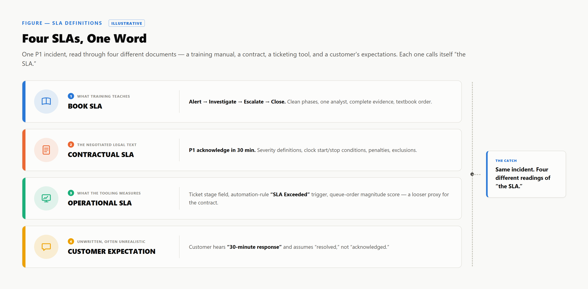

What the contract says vs. what actually happens inside a security operations center — queue pressure, dependencies, evidence, and the clock that keeps running anyway.
What the contract specifies and what the SOC does to close an incident are two records of the same event — a countdown, and an investigation under incomplete information. This paper is about the gap.
Framing the Problem
The Central Thesis
An SLA measures elapsed time; a SOC manages uncertainty, dependencies, and risk. Meeting the SLA doesn't mean the investigation was good; breaching it doesn't mean the SOC failed. That gap is a category error, not a rounding error.
FIGURE 1.1The contractual clock against the analyst's uncertainty cloud — illustrative only, not a specific case or environment.
The clock is precise; the cloud — complete telemetry, confirmed scope, corroborated evidence — is not.
Four claims underlie it:
a. An SLA Is a Negotiated Clock
A service-level agreement fixes when a timer starts, stops, and what duration is acceptable — a negotiated business term, not a technical constant. Every severity-to-duration figure in this paper is illustrative, not a universal standard — no accreditation body publishes a definitive number for "the" SOC SLA.
b. SOC Work Is Investigation Under Incomplete Information
An analyst rarely has a complete picture: telemetry can be partial, scope isn't self-evident, and one indicator is a lead until corroborated. Closure often depends on someone the SOC doesn't manage. That isn't the SOC being slow — it's reducing uncertainty on a timeline others partially control.
c. The Two Overlap, But They Are Not Identical
Ordinarily the SLA and investigation quality move together, which is why the two get conflated; the divergence shows at the tails. A trivial alert can breach its window for administrative reasons; another can close inside its window because a corroborating log went unchecked — an investigation problem wearing a compliant clock.
d. Two Outcomes a Compliance Dashboard Cannot Tell Apart
Pull those three claims together and two outcomes fall out that a compliance percentage cannot tell apart.
Two Real Outcomes, One Indistinguishable Dashboard
SLA met, investigation poor. An analyst closes a P2 alert inside the window without pulling the telemetry that would have contextualized it. The report shows a compliant case; nobody found the actual exposure.
SLA breached, SOC did its job. A P1 alert stalls because containment needs a change-approval the customer's board hasn't granted, or a support queue is the only path to a forensic image. The clock runs; the analyst's work was correct.
A monthly percentage can't tell these two cases apart — both produce identical entries in an SLA-compliance column while saying nothing about which case reduced risk. This matters more now that detection and response often runs through an MDR or MSSP, so the relationship is defined by contract, not visibility into the investigation — a dynamic examined later in this paper.
The rest of the paper covers the SLA taxonomy and where it diverges from a real queue; ten case studies from real operating conditions; the operating model underneath both — gaming, quality measurement, pause-the-clock mechanics, OLA obligations, staffing — and a closing playbook for negotiating SLAs.
Foundations
Why SOC SLAs Matter
An SLA is the written agreement on what "acceptable service" means before an incident forces the question — remove it, and speed disputes become unresolvable.
The Business Case for a Written Commitment
An SLA creates four things unrelated to detection technology: accountability (a named party, outcome, window), contractual clarity (what's being bought), customer trust (an auditable target), and a shared vocabulary — without it, "resolved" means nothing consistent, and most later disputes trace back to that gap.
SLA Commitment
What It Actually Guarantees
Response-time target
A clock started, not comprehension.
Escalation window
A hand-off happened, not context transfer.
Resolution / closure timestamp
A ticket changed state, not root cause found.
Reporting cadence
An update shipped, not analysis completed.
What an SLA Formally Is
NIST's CSRC Glossary (via SP 800-47) defines a Service-Level Agreement as follows:
NIST CSRC Glossary — Service-Level Agreement
"Represents a commitment between a service provider and one or more customers and addresses specific aspects of the service, such as responsibilities, details on the type of service, expected performance level (e.g., reliability, acceptable quality, and response times), and requirements for reporting, resolution, and termination."
Notice what's missing: triage, evidentiary rigor, what "resolved" means. It's structural, not technical — exactly how an SLA can be met on paper while an investigation was shallow, or breached while it was exemplary.
What an SLA Is Not
An SLA guarantees none of detection accuracy, investigation depth, or root-cause correctness: a closed-on-time case may reflect efficient work, or an analyst who simply stopped when pressure took over. Whether that work was sound is a separate question for quality assurance, not the SLA.
No Governing Body Has Set "The" Number
No NIST figure, FIRST recommendation, or ISO clause backs vendor SLA numbers. FIRST's own framework says so directly:
FIRST CSIRT Services Framework v2.1
The framework describes what a CSIRT or SOC may provide, but declines to prescribe a capability level, maturity tier, or timing target — that's left to each team's own context.
NIST SP 800-61 does the same for the incident-response lifecycle: phases, no stopwatch. Federal deadlines are narrow and regulatory, not SOC SLAs — CISA: one hour; CIRCIA: 72 hours (24 if ransom paid); FISMA: seven days to Congress. None is a triage benchmark; every SLA number is negotiated, not technical.
An SLA measures elapsed time. A SOC manages uncertainty, evidence, and risk. Confusing the two is where most SLA disputes begin.
Section 3
Four SLAs, One Word
Everyone says "SLA," but a trainer, a lawyer, a ticketing system, and a customer are reading different documents. The confusion isn't communication failure — it's structural. Four things share one name; none measures the same thing.
3.1 The Book SLA
The Book SLA is what gets taught: one analyst, one incident, walked through a phase model — NIST SP 800-61's lifecycle, or SANS's PICERL (Preparation, Identification, Containment, Eradication, Recovery, Lessons Learned). Neither assigns minutes to a phase; it assumes full context and no queue — a teaching simplification, not reality.
3.2 The Contractual SLA
The Contractual SLA carries legal weight, and it's the one fewest analysts read end to end. Buried in the MSA: severity definitions, clock conditions, capped penalties, and exclusions. ITIL formalizes SLA, OLA, and UC as a structure, but the number is negotiated per contract and severity tier.
3.3 The Operational SLA
The Operational SLA is what SOC tooling measures minute to minute — a looser proxy for the Contractual SLA, rarely reconciled against the contract's actual language. A click-triggered ticketing stage isn't the same event as "identification" defined as confirmed malicious activity — whichever clock a manager watches becomes, functionally, "the SLA."
3.4 Customer Expectation
The fourth lane is unwritten, which is why it causes the most friction. A customer who reads "one hour response" often assumes resolution within the hour; the contract usually just means acknowledgment. That gap can make a technically-met SLA and a furious customer coexist — and sink an account even when the other three lanes look clean.
Reading the lanes togetherFour instruments on one incident, each accurate on its own terms: Book teaches structure, Contractual allocates risk, Operational drives the shift, Customer Expectation decides renewal.

FIGURE 3.1The same incident, read through four lanes, produces four plausible but different answers to "did we meet the SLA" — illustrative layout, not live SOC data.
Lane
Who defines it
What it measures
Who reads it
Book SLA
Trainers, vendor curricula
Idealized phase model (NIST, SANS PICERL) — structure, not a commitment
Analysts in training
Contractual SLA
Legal teams, via the MSA
Severity tiers, clock conditions, penalties, exclusions — real risk allocation
Account managers, legal
Operational SLA
SOC tooling configuration
Real-time proxy, loosely reconciled with contract language
Analysts, shift leads
Customer Expectation
Nobody — forms informally
What the customer believes the number means; conflates acknowledgment with resolution
Whoever explains the gap
These lanes are why one incident can be simultaneously "met" and "failed," depending on which lane you're reading.
The Clock Stack
Nine Clocks, Not One
A contract shows one word — "SLA." Inside the SOC, that word decomposes into a stack of separately-triggered timers, each started and stopped by a different party, which is why a report can read green while an incident is still open, or red on a case handled well.
FIGURE 4.1The incident lifecycle produces nine stages, which most contracts collapse into five reported clocks sitting downstream of two pre-SLA stages — detection and ingestion — that the SOC rarely controls.
Contracts typically report six of these clocks to the customer — acknowledge, investigate, notify, contain, resolve, close — while escalation stays an internal handoff governed by OLA, not a line item in the customer contract. Inside the SOC's own case system the taxonomy is finer still, because each split marks a handoff of timer control: ticketing system, analyst, Tier 2 lead, legal, customer.
Acknowledgement Clock
Starts when an alert is created, stops when an analyst claims it — Microsoft's MTTA metric uses exactly this boundary, not any finding, so an analyst can acknowledge in seconds and then sit idle for an hour without breaching anything.
Initial Triage / Investigation Clock
Starts at ownership, stops when the analyst assigns a first categorization and severity — the pivot for the entire stack, since every downstream target keys off it, so an under-called severity quietly loosens every SLA that follows.
Customer Notification Clock
Starts when a case crosses the contract's notification threshold, stops when the customer is formally informed — but legal and PR review of permitted language routinely sits inside this window, so the analyst who found the issue rarely controls the stop timestamp.
Escalation Clock
Starts when a Tier 1 analyst determines a case exceeds their authority, stops when Tier 2/3 acknowledges the handoff — governed by an internal operational-level agreement (OLA) rather than the customer SLA, though a slow escalation usually turns a borderline downstream clock into an outright breach.
Containment Clock
Starts when the decision to act is made and is supposed to stop the moment the threat is "contained" — a judgment call, not an instrument-measurable event, so the analyst, the IR lead, and the customer can each reasonably assert a different timestamp.
Investigation (Deep) Clock
Starts once containment is asserted and covers root-cause and scope work, stopping when that scope is established — it consumes the largest share of analyst hours on most cases, yet is the clock most often excluded from the SLA entirely, because contracts are written for triage-and-respond, not forensics.
Resolution Clock
Supposed to start at containment and stop at "resolved" — but resolved is overloaded: contained, eradicated, and fully recovered are three distinct states, and a contract that doesn't specify which one closes the clock leaves the earliest defensible option free to be picked.
Closure Clock
Starts at resolution, stops at formal sign-off — often gated on the customer confirming the case is done, so a fully resolved case can sit open on the dashboard, accumulating time against a metric the SOC can no longer influence.
Post-Incident Report Clock
Starts at closure, stops when a formal RCA is delivered, paced by the SOC's own capacity rather than external pressure — the deadline most often quietly missed, because it competes directly with time an analyst could spend on a case still counting down.
FIGURE 4.2A live SLA countdown view of the kind a shift lead watches in real time, showing several clocks in flight across different cases — illustrative and not a real tenant or incident.
A single "SLA compliance: 94%" summary hides that a shift lead manages a portfolio of countdowns, each owned by a different person — a case can be healthy on acknowledgement while quietly burning through containment in the next row down, which only a nine-clock view shows in time to act.
A Sample SLA Model
Illustrative Example — Not a Universal Industry Standard
One hypothetical MSSP/SOC contract model shown only to demonstrate how a severity-to-time table is typically structured — no source (NIST, FIRST, ITIL, CISA, SANS) publishes a fixed cross-industry version, and real numbers vary by contract, customer tier, and severity definition (e.g. Microsoft Azure support plans map the same "Sev A" label to different response times depending on the support plan purchased).
Severity (illustrative)
Acknowledge
Investigation Begins
Notification
Containment
Resolution
Closure / RCA
P1 Critical — confirmed active compromise, business-critical system, exfiltration suspected
15 min
30 min
1 hr (then every 2 hrs)
4 hrs
24 hrs
Within 5 business days
P2 High — likely malicious, contained blast radius, no confirmed exfiltration
30 min
1 hr
4 hrs
8 hrs
3 business days
Within 10 business days
P3 Medium — suspicious activity, low immediate business impact
These severity definitions, values, and business-day conventions are invented for illustration only. Real contracts define "acknowledge" versus "respond" differently, define an hour as business-hours versus 24×7 differently, and layer pause/stop-clock conditions — customer non-response, scheduled maintenance windows, disputed severity — that a simple table like this one cannot show.
The Textbook vs. the Shift
The SLA in the Book vs. the SLA at 2:17 AM
Every SLA document describes the same incident: alert, analyst, escalation, close. That version runs on a quiet Tuesday with a fully staffed floor. The version that actually decides whether the SLA is met arrives at 2:17 AM — and the clock cannot tell the difference.
Same Incident, Told Twice
As a training deck: one alert, one analyst, clean triage, escalation, disposition — no contention. That is the version every SLA clause is quietly written against.
As a Tuesday night shift: fifteen alerts land in one window, two un-deduplicated into separate records for one chain, the EDR console lags, the customer's contact doesn't answer, a threat-intel lookup times out, the analyst is mid-P1 elsewhere with forty minutes left in the shift, and the endpoint turns out to belong to another team — so containment authority isn't even the SOC's. No single item breaks the case; all of them together is what a real shift looks like, and the timer does not pause.
FIGURE 5.1The textbook workflow and a representative 2:17 AM shift, side by side — an illustrative composite, not a transcript of one ticket.
Both run on the same clock — elapsed time between two timestamps — which cannot tell minutes spent investigating from minutes lost to contention. That gap is where most SLA disputes live.
Why the Floor Doesn't Run Like the Page
Not a staffing failure — four properties a runbook cannot model:
Factor
Runbook assumes
Shift delivers
Information
Evidence is ready when needed.
Evidence arrives piecemeal; phases overlap and re-open.
Staffing
One analyst, one case.
Concurrent cases, shift boundaries, an unbroken queue.
Tooling
Console actions return instantly.
Correlation/enrichment latency is real, not contractually published.
Human factors
No clock on the wall.
Fatigue sets in; handover content is loosely standardized.
Tooling latency, documented rather than assumed
IBM's QRadar documentation describes correlation as occurring near real-time, without a published numeric latency guarantee; flow telemetry often reaches SIEMs in per-minute batches, consuming SLA budget before an analyst sees the alert — with no vendor contractually committing to how much.
Kent, Tuptuk, and Becker (2026), in an academic study of cybersecurity incident-response shift handovers, found limited industry-wide guidance on handover practice — so a case crossing a shift boundary keeps only what the outgoing analyst thought to write down.
Where the Minutes Actually Go
Each factor above consumes traceable minutes, reconstructed below for one P1-class case:
FIGURE 5.2Illustrative example, not a universal industry standard — synthetic reconstruction of where one case's 70 elapsed minutes went against a 60-minute internal target specific to this walk-through, unrelated to the illustrative severity table in Section 4.
Active triage accounts for twelve of the case's seventy minutes; the rest is queue wait, telemetry lag, a customer-side dependency, and an escalation delay confirming ownership. A reviewer seeing only the 70-minute total concludes the SOC was slow; one seeing the breakdown finds working time well inside target, with the overage sitting almost entirely in categories no analyst controls.
The book teaches phases. The shift teaches triage math under contention.
II
Part Two
Ten Case Studies Under Real Conditions
Twenty alerts at once. A P1 crossing a shift boundary. A customer who won't answer. A SIEM that reports the world twenty-nine minutes late. Each case follows the same shape: what the contract's clock says, what actually happens, where the SLA number quietly becomes misleading — and the takeaway that survives contact with a real shift.
Section 06
Ten Case Studies Under Real Conditions
These composites are reconstructed from managed-SOC patterns, anonymized so the mechanics stay legible. Each case follows the same arc: setup, the contract's clock, what the shift does, and where the SLA number stops describing the investigation. Figures below are illustrative, not a published standard.
CASE 01
Twenty Alerts, One Analyst Shift
Queue20 alerts
Severities3 P1 / 7 P2 / 10 P3
Analysts on shift3
Time remaining on oldest SLA~2 min
Setup. At 14:01 a port-scan sweep lands in the SIEM alongside an impossible-travel login at CUST-A and a beacon at CUST-B. Within six minutes the queue holds twenty tickets across five customers — 3 P1, 7 P2, 10 P3 — worked by three analysts.
What the contract's clock says. Each ticket runs its own ack/investigation clock, independent of the rest. CUST-D's encryption alert has about four minutes left before P1 breach; CUST-A's login has six, CUST-B's beacon two. The contract is twenty stopwatches ticking in parallel, unaware three people must stop them.
What actually happens. Severity alone doesn't say which alert is real: CUST-A's P1 login is thin evidence, CUST-B's P1 beacon is corroborated by DNS pattern and ASN reputation, and CUST-C's nominal P2 — an admin role change with no ticket behind it — is a credential attack in disguise. Worked strictly by severity, an analyst opens the wrong door first. The shift lead sees what severity can't, and reprioritizes accordingly — defensible calls that still read as late tickets weeks later.
FIGURE 6.1Synthetic reconstruction of the queue, sorted by SLA time remaining.
This surge lands by day, but the same mechanism is worse overnight, where alert volume clusters by hour and outruns fixed headcount.
FIGURE 6.2Illustrative alert volume by hour (synthetic data): concentrated overnight, when staffing is thinnest.
Where the SLA number becomes misleading. CUST-D's four minutes is real, but it describes a queue position, not a threat — not whether the alert is a false-positive or a live compromise, nor that the analysts are already committed elsewhere. The report may show two breaches from the same window, neither a story about competence.
Takeaway. Contractual SLA time is denominated per ticket; operational capacity per shift. Under surge those two systems stop reconciling — that mismatch, not analyst judgment, is usually the real driver of the breach on the report.
CASE 02
P1 During Shift Handover
ScenarioIllustrative composite — not a captured incident
P1 Confirmed05:46, 14 min before shift change
Handover Window05:46 – 06:10 (06:00 boundary)
Analyst ContinuityAnalyst A (outgoing, night) → Analyst B (incoming, day)
Analyst A confirms a P1 at 05:46, fourteen minutes before shift change, having already correlated the alert, pulled the process tree, and opened containment with the endpoint team — that work is the case, and the SLA clock has no concept of a roster. The common failure isn't an outgoing analyst who did nothing; it's one who did the work and left, forcing the incoming analyst to reconstruct reasoning from a record that captured actions but not intent. Good handover needs a short synchronous overlap, transferring judgment, not just facts.
FIGURE 6.3One shared case record spanning the 06:00 shift boundary, visible to both outgoing and incoming analyst (illustrative/synthetic board).
A 2026 UCL study of SOC handover practice (arXiv:2601.07788) found that what transfers between shifts varies analyst-to-analyst, shaped by habit more than fixed procedure — a fair description of most SOCs' actual shift change. Its draft checklist of minimum handover elements appears below.
Handover Element
What Should Be Visible to the Incoming Analyst
Case / decision state and evidence trail
What's confirmed vs. assumed, plus supporting artifacts.
Active alert / case status with timestamps
Which alerts are open, acknowledged, or escalated, and when.
Impacted assets and containment steps taken
What's isolated or blocked already vs. still pending.
Open questions and dependencies
What the outgoing analyst was still waiting on.
SLA ownership does not reset at handover
The 06:00 boundary is a staffing event, not an SLA event. The clock recognizes the alert's timestamp, not the roster: at 06:10 the case is already 24 minutes old, owned continuously, not split into two half-obligations.
The gap this case surfaces rarely shows at 06:10. It shows around 09:00, when Analyst B — working from a record that looked complete — re-asks a question already answered, or re-runs a check already confirmed, because the open-question field didn't carry over. It only becomes visible in hindsight, as SLA time spent rediscovering ground already covered.
CASE 03
The Customer Who Won't Answer
Illustrative
TriggerAnomalous account-privilege change flagged for validation
SOC ActionEscalate to customer contact, request confirm/deny
Customer Response Time3 hours elapsed before reply
Open QuestionWas the SLA clock running that whole time?
A SOC analyst flags an ambiguous account event — a privilege change, a new device enrollment — that could be routine administration or an account takeover in progress. Only the customer can say which. The analyst escalates and waits three hours: legitimate, a laptop provisioning. Routine false positive.
What isn't routine is the clock. Did the SLA keep running while the SOC sat idle, waiting on someone outside its control? There's no universal answer — it lives entirely in whether the contract defines a "stop-clock" pause condition at all.
Question the contract must answer
Why it decides the outcome
Is "awaiting customer" a defined pause state, or does the SLA only stop for the SOC's own internal dependencies?
Silence means the clock runs against the SOC by default, regardless of who caused the delay.
Is the pause logged with a timestamp and a named contact attempt, not just a status flag?
An undocumented flag is indistinguishable from the SOC parking a ticket to buy itself time.
Does the tier define a maximum response window after which the SOC's obligation is met regardless?
Without one, a three-hour wait and a three-day wait are contractually identical: unbounded.
Absent that language, assume the clock ran the full three hours — a pause the contract never anticipated earns no credit. This is why the SOC's own behavior during the wait matters on its own: a message timestamped at the one-hour mark, noting the customer confirmation still pending, is both fair and evidentiary. A pause claimed for the first time in a post-incident review, with no message trail behind it, rarely survives scrutiny.
Bridges to Section 9
This case turns on one mechanical question — what counts as a valid stop-clock condition and how it must be documented — that Section 9 addresses directly.
An SLA clock does not start itself. A definitions clause does — one sentence, written months before any incident exists to test it. Case Study 4 shows why that sentence matters most.
When did the SLA clock start? All four timestamps are defensible, and each yields a different reported time for the same 29 minutes.
Candidate clock-start
Time
Why it's defensible
Why it's contested
Start of attack
01:00
Measures the customer's actual exposure window.
Unknowable until forensic reconstruction.
Log arrival
01:21
First visibility the SOC's tooling has at all.
Bakes in logging and transit lag beyond analyst control.
Alert generation
01:24
First moment a human could plausibly act.
Excludes the 21-minute ingestion lag before it.
Analyst acknowledgement
01:29
Cleanest, fully SOC-controlled timestamp.
Makes "time-to-acknowledge" a tautology: clock starts when it stops.
This isn't invented for this paper. IBM's own documentation for QRadar — a widely deployed SIEM — defines Device Time as the timestamp parsed from the event payload itself: the source's own report of when the activity happened. QRadar's Start Time is essentially that same source-reported timestamp — it falls back to arrival time only when the source provides none, so it is not when QRadar received the event. The field that actually marks when QRadar wrote the record is Storage Time, and it's the Start Time versus Storage Time gap that measures ingestion delay. IBM calls QRadar's correlation near real time — a qualitative phrase, not a numeric guarantee. Even inside one well-documented platform, "when did the clock start" stays unsolved.
FIGURE 6.4The four elapsed gaps in one alert's path, from attacker action to acknowledgement, as a single pipeline; timestamps are illustrative, not pulled from a live tenant.
Takeaway
The SOC performed once, not four ways — yet its SLA number reads 8, 5, or 29 minutes depending on which timestamp the contract quietly calls clock zero: a one-line definition, buried in an appendix, that rarely reaches the customer's scorecard.
CASE 05
Wrong Severity, Later ReclassifiedIllustrative
P3 → P1
Initial TriageP3 — isolated scripting anomaly
Reclassified ToP1 — active ransomware behavior
Trigger For ReclassificationShadow-copy deletion + mass file rename observed on follow-up
Open QuestionWhich clock governs the SLA record?
An EDR alert on one workstation shows no beaconing, no privilege escalation, no threat-intel hits — triaged P3. Hours later, a second analyst finds deleted shadow copies, mass file renames, and lateral attempts to two hosts — reclassified P1. Nothing about the intrusion changed; only the SOC's understanding of it did.
The correction is right. But reclassification raises three questions most contracts never answer:
Question
Why there's no single default
Retroactive P1 clock from the original alert, or fresh from reclassification?
Retroactive charges the misjudged time; fresh timing erases it entirely.
Does the original P3 clock get discarded, or stay on record?
Discarding looks cleaner; kept, it's the only evidence of how long the misjudgment lasted.
Does it count as a P3 breach, P1 breach, both, or neither?
Same event, four possible dashboard numbers — no default is obviously right.
The three most common resolutions, none a standard, just explicit load-bearing choices:
Approach
P1 clock starts
Original P3 clock
SLA reporting outcome
Retroactive merge
Original alert time
Overwritten into P1
Single P1 case, likely a breach
Fresh clock
Reclassification time
Closed separately
Closed P3 + new P1, two clocks
Dual clock (recommended)
Reclassification, logged with original
Retained, superseded
Both visible, linked by the reclassification event
Where correction and gaming look identical
Legitimate correction and deliberate SLA gaming leave the same paper trail without a written rule and a timestamped reclassification log. Section 7 returns to this.
Severity is fixed at intake in most tooling, but it's a live judgment that stays revisable while a case is open — punishing analysts for updating it discourages exactly what a SOC should want.
Authorial guidance
Whichever rule a SOC adopts, apply it consistently. Recommended: dual clocks, linked by a timestamped event recording who changed severity, when, and why. That doesn't decide whether the case counts as a P3, P1, both, or neither breach — that's a policy call for the SOC and stakeholders to make explicitly.
Not every SLA breach starts with the incident that breaches it. Sometimes it starts hours earlier, with an untuned rule quietly consuming the shift's real resource: analyst attention.
The rule flagged regular outbound connections as beaconing, with no allowlist for traffic every endpoint already generates — backups, EDR heartbeats, patch check-ins. It closed 637 such alerts, competing with a concurrent P2 authentication anomaly that needed human review — and nearly breached its own SLA because the noisy rule had already spent the budget it needed.
Disposition Tracking Is the Feedback Loop, Not an Afterthought
Disposition tracking is a documented SIEM/SOAR discipline: Microsoft Sentinel requires every closed incident to carry one of five classifications — separating wrong logic from wrong data and from expected activity. This shift's 637 closures:
Closure Category
Alerts
Share
What It Means
True Positive
3
0.5%
Correctly escalated
Benign Positive – Expected
22
3.5%
Known and authorized
False Positive – Incorrect Logic
391
61.4%
The rule's criteria are the defect
False Positive – Inaccurate Data
118
18.5%
Data/enrichment defect
Undetermined
103
16.2%
No conclusive evidence
A synthetic composite for illustration, not measured data from any real SOC or Sentinel deployment.
Six in ten closures are "Incorrect Logic": a tuning failure, not a triage one.
Tuning Is a Detection-Engineering Problem
The fix isn't exotic: IBM QRadar documents building blocks and reference sets natively — exclusion logic lives in a building block, and hosts to exclude live in a reference set, updated without rewriting the rule. Add this to the set the rule already consults, and the load disappears. That exclusion should be scoped to specific verified hosts or IPs rather than a generic traffic category, reviewed on a fixed cadence, and checked for volume and timing drift — ongoing detection-engineering maintenance, not a one-time fix, since attackers can time C2 or beaconing traffic to mimic allowlisted periodic maintenance windows.
SLA and detection-quality metrics are one dataset: alone, the SLA report shows a P2 that barely made its clock; alongside the disposition breakdown, it shows a rule burning analyst attention on a defect engineering could have fixed first — attention that could have gone to real triage instead.
Excellent SLA compliance with a terrible false-positive rate isn't success — it's drowning efficiently.
Takeaway
A high "Incorrect Alert Logic" share signals detection engineering, not analyst coaching.
CASE 07
The L2 DependencyIllustrative
57 min vs. 30
TriggerP2 alert triaged by L1, requires L2-level correlation
L1 Triage Time12 minutes, handoff clean
L2 Acceptance Wait45 minutes, ticket unopened in queue
Customer SLAEscalate to L2 within 30 minutes
Open QuestionWhich team owns the resulting breach?
An L1 analyst triages a P2 alert requiring L2 correlation and hands off a clean case in twelve minutes — inside the account's 30-minute SLA. L2, mid-shift on its own backlog, leaves it unaccepted for 45 minutes; 57 minutes elapse before acceptance, nearly double the target, L1 responsible for barely a fifth. The breach report shows only that number — both teams are technically right, since no process segment owned the actual gap.
Segment
Elapsed
Internal owner
Governed by an OLA?
Alert open → L1 triage complete
12 min
L1
Yes
Handoff → L2 acceptance
45 min
L2 (once accepted)
No
Total to L2 acceptance
57 min
—
SLA target: 30 min
This is the gap an Operational Level Agreement (OLA) exists to close: an SLA is the provider's commitment to the customer; an OLA is the same kind of commitment between internal teams, facing no customer and, unlike the SLA, rarely carrying a contractual penalty, existing only to give each internal step an owner and a clock. Here, an OLA covers L1 triage but none was ever written for L2 acceptance, so that unclocked interval is exactly where time disappears under queue pressure.
Where the accountability gap actually lives
The 45 unaccepted minutes are most of the breach the customer experiences, yet invisible to internal reporting since no OLA measures them.
Bridges to Section 10
Section 10 shows how a customer SLA chains internal targets — triage, acceptance, incident-manager engagement, margin. This case is what happens when one link is left out.
The honest answer to "which team owns this breach" is neither — it is the SOC's own design, which promised the customer without writing the internal agreements to keep it. A customer SLA without matching internal OLAs is a promise with no owner for the time in between.
CASE 08
The Third-Party Dependency
SOC RoleDetect, decide, request, escalate, track
Blocking ActionHeld outside the SOC's authority
Governing InstrumentUnderpinning Contract (UC) or customer-side dependency
Reporting ValueIsolates elapsed time outside SOC control
By this point the SOC has detected, triaged, and decided — on time. The clock keeps running because someone else must act.
Cloud provider. A control-plane fix needs the vendor's own desk.
Upstream ISP. Only the ISP's null-route stops an in-flight flood.
MDR sub-vendor. Isolation is a ticket into their queue, not the SOC's console.
Customer's own teams. A credential reset or firewall change needs the customer's own approval, not the SOC's.
The first three are external; the last is the customer's own staff — equally outside SOC authority.
The Underpinning Contract Behind the SLA
ITIL's Underpinning Contract (UC) covers an external supplier underpinning the SLA, with a turnaround the SOC can't shorten; its Operational Level Agreement (OLA) covers internal departments it fully controls. The customer's own teams fit neither label — a dependency, same effect: a process the SOC doesn't own.
What the SLA Names
One clock: time from detection to containment
One accountable party: the SOC
One outcome: met or breached
What Actually Gates Containment
A chain of UCs and dependencies
Each hop: its own queue, no guaranteed commitment
A clock running through every hop
Tracking the Dependency, Not Just the Clock
Since the SOC can't compress a third party's time, its discipline is logging it precisely.
Field
What It Captures
Engagement timestamp
First contact with the party
Request detail
The verbatim ask
Channel used
Portal, TAM, or ticketing
Acknowledgment timestamp
Receipt confirmed, distinct from action
Action timestamp — or non-response
Completion, or record of none in-window
Escalation path used
Whether it exceeded the standard channel
Why this matters after the fact
A dependency log isn't an excuse — it separates the SOC's own time from time spent waiting on a third party. Even CIRCIA's 72-hour reporting deadline is a disclosure clock, not a triage SLA; the log proves the SOC moved as fast as the case allowed.
None of this changes a breach against the provider clock — only the conversation after.
Every SLA has a silent co-signer: the OLA and UC chain behind it. No SOC can out-perform a promise a third party's contract already broke.
The SLA clock assumes one incident at a time. It has no term for three P1s landing in one shift against two qualified leads — whether the SOC practices incident command or reverts to first-come-first-served depends on writing that call down.
Case 09
Three P1s, Two Analysts
ILLUSTRATIVE
ScenarioThree concurrent P1 declarations, one shift
DomainsIdentity · Endpoint · Cloud IAM
ConstraintTwo analysts qualified to lead a P1
MechanismIncident commander triages the triage
Within eleven minutes, three detections cross the P1 threshold: domain-controller lateral movement, file-server ransomware encryption, and an anomalous IAM role creation in production AWS. All three page P1; only two analysts on shift are qualified to lead one.
FIGURE 6.5Illustrative, synthetic snapshot of the coverage gap: two qualified analysts against three P1s spanning identity, endpoint, and cloud IAM.
The trap: whoever is free grabs the loudest or first-paged ticket, and the other two wait by accident, not decision. An incident commander exists to interrupt that — triaging the triage before assigning anyone. That role has to come from somewhere other than the two scarce leads: the shift lead, a role distinct from the two analysts qualified to run a P1, carries it, since spending one of only two qualified leads on pure coordination is the shortage repeating itself one level up.
That assessment reorders everything here. The file-server host was already isolated by automated containment — one host, contained. The IAM change traces to a stale-credential automation account, fully reconstructable from logs. The domain-controller movement has no such ceiling — success compromises every credential trusting that domain, so it gets the primary analyst's full attention while the second triages ransomware in parallel and the IAM finding goes to cloud platform.
Incident
Domain
Confirmed impact / blast radius
Disposition
Lateral movement, domain controller
Identity
Unbounded if successful
Primary analyst
Ransomware encryption, file server
Endpoint
Isolated by automation
Second analyst, parallel
Anomalous IAM role creation
Cloud IAM
Stale credential, logged
Cloud platform team
Illustrative reconstruction of the incident commander's assessment, not a specific customer engagement.
Reassignment draws on more than the two free leads: lower-priority queue work pauses, its owner pulled into overflow for evidence collection. Each incident also gets the team that owns its domain — AD engineering, EDR, cloud platform.
FIGURE 6.6Illustrative, synthetic excerpt of a duty manager's live decision log — reassignments and each incident's SLA clock timestamped as they happen, from a scenario distinct from Figure 6.5.
The artifact that makes this defensible is a decision log kept live: what was reassigned, when, on whose authority, and which incident was left with less coverage and why.
Takeaway
Contractual SLA math assumes independent, uncontended clocks. Operational reality is a shared, finite pool that three P1s can exhaust at once. Someone must make an explicit, evidence-based call about which clock gets less attention, and why.
CASE 10
The Premature CloseIllustrative
Clock Stopped, Not Solved
TriggerSLA timer running down to single-digit minutes before breach
Analyst ActionCase marked resolved before evidence review is complete
Dashboard OutcomeCase shows green — no breach recorded
Open QuestionDid the investigation finish, or did the clock just stop?
An overloaded analyst's routine case — an outbound connection still needing correlation and a reputation check — hits single digits on its SLA timer, unreviewed. The analyst writes a boilerplate note, marks it resolved, and closes it. The clock stops; the dashboard reads green. Unlike Case 05, where severity changed because evidence changed, here the case closed instead of the evidence being reviewed.
Naming the pattern: SLA gaming
SLA gaming is any action that makes the SLA record look compliant without making the response correspondingly good, distinct from a good-faith wrong call under uncertainty. It reads identical to a well-handled case on any elapsed-time-only dashboard.
It recurs in a recognizable set, each gaming a different part of the clock:
Gaming behavior
What it actually manipulates
Premature closure
Resolved before the justifying analysis exists.
Incorrect false-positive call
Labeled benign to exit the breach count, not on evidence.
Close, then reopen
Closed for a timestamp, reopened later for the deferred work.
Severity downgrade
Looser tier without new evidence — Case 05's reclassification, inverted.
False "waiting on customer"
Stop-clock with no logged contact attempt (contrast Case 03).
Delayed ticket creation
Record opened after the alert, delaying the clock's start.
Copy-paste comments
Boilerplate mimics analysis with no case-specific substance.
None require a dishonest individual — measuring analysts mainly on elapsed time predictably produces this. Catching it needs routine checks on signals the clock itself doesn't carry:
Governance control
What it catches
Reopen-rate tracking
Quick reopens, by analyst and shift, signal premature or reopen-gamed closures. Broadened to a recurrence rate — new cases opened on the same asset, account, or indicator within a defined window of a prior closure — this also catches the closure abandoned and re-alerted as a brand-new ticket rather than a literal reopen.
Quality / root-cause audits
Sampled cases checked against evidence catch unreviewed, boilerplate closures.
Reclassification-rate monitoring
Severity moves plotted against time-to-breach surface deadline-correlated downgrades.
These sit alongside the dashboard, not in place of it, checking what it structurally cannot: whether the work behind each stopped clock happened.
Bridges to Section 7
This case states plainly what Section 7 addresses in full: SLA gaming as an incentive-design failure, and the governance program that separates measuring response from managing metrics.
Section 7
When SLA Becomes the Wrong Incentive
An SLA holds a SOC accountable to a customer, not analysts judged every shift. Once those collapse into one figure, it stops measuring what it was built to measure — not from dishonesty, but because that's what happens to any measure turned into a target.
7.1 Two Laws Older Than the SOC
This isn't SOC-specific. Charles Goodhart described it in 1975: a targeted statistic gets managed to, not tracked — Goodhart's Law. Donald T. Campbell said the same a year later, as Campbell's Law: the more an indicator drives decisions, the more it invites corruption that distorts what it monitors. Neither implies bad faith; the analyst is responding to the SOC's own incentive.
7.2 What Gaming Looks Like on a Real Shift
Case Study 10 is this pattern taken to its conclusion: a case closed on a one-line note nobody followed up on, timed just ahead of breach. The list below generalizes it — moves any rational analyst makes once the dashboard, not the incident, decides how their shift is judged.
Gaming behavior
On the floor
Optimizes for
Blanket acknowledgment
Alert acked unread
Stops clock, no triage
Closing early
Resolved on thin evidence
Elapsed time, not resolution
"Awaiting customer," no contact
Paused, no message sent
Unearned stop-clock, unlike Case 03
Severity downgrade
Cut pre-breach, no evidence
Looser clock, not truer risk
Fresh case, not the hot one
Old ticket left to lapse
Clean clock, lost continuity (Case 05)
Copy/paste notes
Only the ticket number changes
Looks like investigation, isn't
Reflexive escalation
Pushed up fast, unread
Transfers clock, not understanding
Managing the dashboard
Watching board, not queue
Reported number, not real risk
Ticket splitting / incident fragmentation
One long incident cut into parallel tickets
Each fragment's clock in-window, not total duration
Clock restart via repeated reclassification
Reclassified again each time breach nears
Fresh clock, not a fresh case
Denominator gaming
Exclusions widened, thresholds raised, quietly
Compliance %, not faster cases
Type reclassification
Retyped as service request, not incident
Exits the SLA population, not just its clock
Individually, several of these look like ordinary triage. Only a timestamped, evidence-linked record, per Sections 2 and 5, separates a gamed decision from a legitimate one.
7.3 The Standard-Setter's Own Warning
This isn't an outside objection — NIST SP 800-61 Rev. 2 (since superseded by Rev. 3) warned against using incident metrics to judge individual analysts, since that discourages honest reporting. NIST still backs SOC-wide metrics for trend visibility; the caution is only against pointing one at an individual.
FIGURE 7.1Two views of one period: a 99% SLA-compliance dashboard on top, the behaviors above underneath it — an illustrative composite, not a live measurement.
A response-time number that becomes a performance target gets optimized instead of the incident — Goodhart's Law doesn't ask permission.
The uncomfortable half of this section
A beautiful SLA dashboard can hide a weak SOC: 99% compliance is compatible with every row above happening underneath it, every shift.
That's uncomfortable, not an argument for abandoning SLA measurement — elapsed-time tracking still gives customers an auditable basis for accountability and leadership visibility no manager could hold in their head. Being gameable doesn't erase that value; it just means the number alone can't prove the work was good. Section 8 pairs the clock with quality signals that measure what it can't see.
Section 8
SLA vs. Quality: A Framework
Every closed case gets two verdicts: a procedural one (did it close inside the clock) and a substantive one (was the investigation actually good). A monthly SLA report collapses both into one compliance percentage. Plotted as SLA Met/Breached against Quality High/Low, four combinations emerge — only one is unambiguously a management problem.
FIGURE 8.1Illustrative example, not a universal standard — case markers are synthetic, shown only to illustrate the framework's structure.
Quadrant
Clock
Quality
Represents
Corrective action?
1 — Target State
Met
High
Claimed outcome — verify, don't assume
No
2 — Lucky, Not Good
Met
Low
Premature closure dressed as success
Yes — process review
3 — Safe But At Breach Risk
Breached
High
Hard case, correctly worked
No — check the SLA's scoping
4 — Worst Case
Breached
Low
Slow and wrong together
Yes — the one quadrant that warrants it
8.1 Quadrant 1 — Target State: the Rarest Combination Anyone Can Actually Verify
Quadrant 1 is the least-verified claim in SLA reporting: "met" is recorded automatically, "high quality" is not. Verifying it takes evidence the clock never produces — RCA completeness, a second-reviewer audit score, a near-zero reopen rate.
8.2 Quadrant 2 — Lucky, Not Good: Clock Theater
Quadrant 2 is clock theater: the timer stopped because the investigation stopped looking, not because it finished. Case Study 10, elsewhere in this paper, shows exactly this — a clean, on-time close a second reviewer later found rested on triage too thin for the evidence.
8.3 Quadrant 3 — Safe But At Breach Risk: the Thesis Made Concrete
A genuinely novel incident can take longer to work correctly than any generic clock allows — the SLA breaches, but scope is correctly mapped and root cause confirmed, not assumed. The risk is reputational, not investigative: an x-axis-only report records this identically to Quadrant 4, erasing the difference between "hard" and "bad."
8.4 Quadrant 4 — Worst Case: the Only Quadrant That Should Trigger Corrective Action
Here the clock breached and the investigation was also weak — scope incomplete, root cause unconfirmed. No complexity narrative to invoke, no clean dashboard row to hide behind: this is the one quadrant where management response — staffing, playbook, or queue-prioritization fixes — is actually justified, because both signals agree something went wrong.
What the compliance percentage cannot tell you
Compliance percentage can't distinguish Quadrant 1 from 2 (both "met"), or 3 from 4 (both "breached") — an x-axis-only dashboard is blind to the y-axis. Quality signals must sit alongside the clock, not be derived from it, or they just reproduce the x-axis under a new label.
The fifth case the grid can't plot
All four quadrants presuppose an alert fired and a clock started. None has a cell for the intrusion that triggers no alert at all — a false negative, a missed detection. There, the clock never starts, so SLA compliance reads 100% by default, while investigation quality is effectively zero: nothing was ever opened to investigate. That is a fifth, off-grid case a four-quadrant model is structurally unable to see, and it is the most extreme version of this section's own thesis — a fully "met" clock next to fully absent quality. Nothing on a compliance dashboard defends against it; the real countermeasures are threat hunting, purple-teaming, and detection-coverage audits, not SLA mechanisms.
Meeting the SLA does not mean the investigation was good. Breaching the SLA does not mean the SOC failed. The clock and the case are two different stories, and only one of them made it into the contract.
Section 9
SLA Pause / Stop-the-Clock
A clock measures elapsed time, not who could act on it. Stop-the-clock records that a stretch belonged to someone else's queue — the framework's most honest instrument; claimed only after the fact, the same artifact Section 7 documents under a different name.
9.1 — Six States Worth Pausing For
Six wait-states recur across SOC operations, each one blocked on someone else.
Pause state
Waiting on
Ends when
Customer response
Named customer contact
Reply, or contracted response ceiling
Vendor action
Vendor, under its Underpinning Contract
Vendor confirms complete
Missing telemetry
Log-source or pipeline owner
Log arrives, or decision to proceed
Maintenance window
Change-advisory board / infra owner
Window opens, closes, or cancels
Account-owner validation
The alert's triggering account owner
Owner confirms or denies
Internal team action
Named team under an internal OLA, outside the case owner's own chain
Team logs action complete
Unlike Case Study 4's clock-zero dispute, this is literal: the data hasn't arrived.
The internal-team-action row applies only when the named team sits outside the case owner's own reporting chain; an ordinary delay from the owner's own closely-coupled team is an OLA gap, not a pause. Case Study 7's unaccepted L2 handoff is exactly that kind of delay — it belongs on a breach report as an OLA gap, not hidden behind a stopped clock.
9.2 — Legitimate Pause vs. Contract-Violating Pause
A pause earns its name only when a real, contactable dependency exists when it begins, not when the analyst is busy.
What Makes a Pause Legitimate
Contacted a named party, via the agreed channel, before logging it
Reason and start time logged as the wait began
A resume trigger was defined in advance
What Makes "Pausing" Just Clock Erasure
Status flips to "pending" with no outreach attempted
The pause appears only after breach, backdated
"Pending" sits indefinitely, with no resume condition defined
9.3 — The Four-Part Documentation Standard
Every state above reduces to one test; missing any part, the SOC has stopped measuring.
Required element
Must contain
Absence permits
Timestamped reason
Exact start moment, checkable cause
A length invented after the fact
Named owner
The specific person/team/vendor blocked on
An unfalsifiable, unnamed excuse
Resume trigger
The exact ending event
Closure whenever convenient, not when cleared
Resume latency
Gap between the trigger event and the resumed-timestamp, measured
A pause that outlives its own trigger — one contact attempt, no timely follow-up, unflagged
Where pause becomes indistinguishable from gaming
Section 7 catalogs maneuvers — clock restarts, type reclassification, ticket splitting — that fake a met SLA. Missing any element above, a pause yields the same result: unproven time removed.
9.4 — The State Machine and the Audit Trail
A pause is a state transition a system should model explicitly, per Figure 9.1's worked example.
FIGURE 9.1The SLA clock's running/paused state machine with a synthetic case-log excerpt; names and timestamps are constructed, not real.
J. Tan acknowledges at 02:14, pauses at 02:24 for "awaiting customer AD admin confirmation," and closes MET at 04:31. Elapsed time reads as a breach at two hours seventeen; the trail shows the SOC's actual work was thirty-nine minutes, the rest the administrator's. The machine enforces only the state, not the reason's truth.
Pausing the clock isn't cheating the SLA — it's the only way the SLA can ever tell the truth about who was actually waiting on whom.
Section 10
SLA vs. OLA vs. UC: The Hidden Contract Stack
A customer SLA reads as one promise, but a chain of agreements behind it — invisible to the customer — decides whether it holds. ITIL structures that chain as three instruments, each with its own owner, each able to break the number.
10.1 Three Agreements, One Word
Per ITIL: an SLA is the commercial, externally-visible promise; an OLA supports it internally — L1 to L2, SOC to platform — no penalty, just an owner and clock; a UC is with an external supplier the SLA depends on, e.g. an EDR vendor's isolation turnaround. This chain shows whether a breach traces to an OLA, a UC, or slow analysts.
Instrument
Relationship
What a breach means
SLA
Provider ↔ customer
Credits, penalties, trust erosion
OLA
Provider's own teams
Invisible to the customer; the SLA's buffer
UC
Provider ↔ external supplier
Elapsed time the provider never controlled
10.2 Same Engine, Different Field
Per ServiceNow's own Service Level Management documentation, SLA/OLA/UC records run on the same timer/task engine, differentiated only by a "Type" field — a missing OLA is a configuration gap, not a platform limit. Case Study 7 is exactly that gap.
10.3 Worked Example: The 30-Minute Promise, Decomposed
Take a customer SLA promising P1 escalation to L2 within thirty minutes: delivering it means decomposing that clock into owned segments plus a buffer.
FIGURE 10.1A 30-minute customer SLA decomposed into four chained OLA segments — illustrative, not live-account data.
L1 Triage Target
10 MIN
L2 Acceptance Target
5 MIN
IM Engagement Target
5 MIN
Buffer / Margin
10 MIN
Illustrative example — not a universal industry standard
This 10/5/5/10 split is illustrative, not prescriptive. No framework here — ITIL, NIST SP 800-61, FIRST's CSIRT Services Framework, or other — sets these durations; it's negotiated per account.
L2's five minutes accepts the ticket, not resolves it. Each segment should be its own OLA, so a red number points to which segment ate the buffer.
10.4 Why an SLA Without Matching OLAs Is Structurally Unsound
An SLA without a backing OLA chain is unmeasured, not conservative: no leg is bounded, so time can vanish at any handoff. Case Study 7: L1 triaged in twelve minutes, inside that account's own OLA target (a separate figure from the illustrative 10-minute example above); no OLA covered L2 acceptance, so the ticket sat unopened forty-five more minutes — fifty-seven total against a thirty-minute SLA, from one unowned segment.
Case Study 8 mirrors this one layer out: a flawless OLA chain can still miss the SLA if resolution depends on an external UC — a cloud control-plane action, an ISP null-route — the last mile the provider never controlled. Soundness needs both halves.
Every SLA a customer signs has a silent co-signer: the OLA and UC chain behind it. No SOC can out-perform a promise that a third party's contract already broke.
Engineering Margin
The SLA Buffer
A process that just barely meets its SLA on a normal day has no margin left — the gap between a clean close and a breach is ordinary variance.
Zero-Margin Planning Fails on the First Ordinary Bad Day
No engineer sizes a beam to fail at its expected load; margin absorbs normal variation. A SOC paced exactly to the SLA line has none — a shift handling one P2 can still miss a second landing minutes later, no mistake required. "Usually" is not "will."
The Internal Target: Built to Absorb the Variance the Contract Never Sees
The fix is an internal target set inside the contractual number — instrumentation, not a second promise. Crossing it tells a lead to reassign within the current shift, pull from lower-priority queue work, or escalate to a lead or incident commander while it still matters; crossing the contract leaves only the report. Adding headcount is not a lever available in the moment — it is a structural roster-planning decision made ahead of time from percentile data, not a live response option.
Illustrative example — not a universal industry standardA 30-minute SLA might carry a 20-minute internal target — a 10-minute buffer to catch slow cases first. Figures are illustrative; no standard prescribes them.
Averages Look Safe; the Tail Is Where the SLA Actually Breaks
Checking a target against the mean or median is close to useless: triage-time distributions are right-skewed, and breaches happen in the tail, not at the median. Percentile-based views of time-to-triage and time-to-closure (e.g., 50th/90th/99th) can be built in SOC dashboards — including Microsoft Sentinel workbooks via KQL's percentile functions — for this reason.
FIGURE 11.1An illustrative, synthetic 90-day time-to-triage sample (n ≈ 1,050 events), not real data, where the median (24 min) exceeds the 20-minute target and the 99th percentile (71 min) is more than double the 30-minute SLA.
The median already eats four minutes of the buffer before anything goes wrong; the 99th-percentile case blows through the contract regardless of discipline, so that tail needs explicit management.
How Much Buffer? A Capacity Decision, Not a Rule
There is no single correct size: margin is a cost-and-capacity trade-off decided per SOC from its own data, not a vendor deck. Too tight burns attention on cases that would have closed fine; too loose turns variance into breach.
TakeawayA buffer is margin sized against a SOC's own measured variance and its tolerance for holding that margin in reserve — set from percentile data, and revisited, not fixed once and forgotten.
Section 12
SLA Is Also a Capacity Problem
Every clock in this paper ends at a person on a finite roster and shift, not the constant capacity an SLA assumes. Many SLA failures are staffing failures in disguise.
12.1 Headcount, Shifts, and the Coverage Nobody Standardized
A contract promising round-the-week coverage implies a roster staffed every hour of it. No standards body has solved that arithmetic: FIRST's CSIRT Services Framework catalogs the services a CSIRT provides but explicitly leaves staffing models, shift design, and roster logistics for each team to work out on its own.
Out of scope, by the framework's own admission
The field's own professional body files staffing under logistics each organization handles alone — a standard was never attempted.
Thinner night-and-weekend rosters and planned leave cut headcount on a schedule the contract never adjusts for.
12.2 Concurrency, Queue Depth, and Why "Alerts Per Analyst" Is a Bad Metric
Alerts-per-analyst-per-shift means little without the mix: a domain-admin compromise consumes hours, a benign positive a minute, yet both count as one alert. The SLA clock cannot tell an easy alert from a hard one — the roster can.
12.3 Skills, Specialization, and the Training Tax
Headcount answers how many people, not who can work a case well — routing by queue position rather than specialty just adds investigation time, and ramp-up or certification pulls that same capacity off the floor.
12.4 Surge Events and Tool Outages: When Demand or Capacity Moves Without Warning
A widely exploited vulnerability can multiply alert volume within hours, and every clock slows together — simply more open cases. A tool outage adds a second shock: its backlog lands all at once on recovery, on a roster sized for ordinary volume.
When demand and capacity move in opposite directions
A surge raises demand while capacity stays fixed; an outage removes capacity while demand builds unseen. The two together are the default failure mode, not a coincidence.
FIGURE 12.1A diagrammatic SOC layout with analyst pods and a war room for major-incident coordination — illustrative, not an actual SOC's layout.
Isolated pods have no place to coordinate a multi-pod response; a war room does, at a real cost in analyst time.
12.5 Three Staffing Models, No Universal Answer
If one correct SOC staffing structure existed, the largest vendors would have converged on it. They have not.
Organization
Model
Structure
Rationale
Microsoft
Tiers + temporary surge team
Standing tiers handle triage/investigation/hunting; a temporary cross-functional team is assembled for major incidents (distinct from Sentinel's unrelated "Fusion" correlation feature)
Routine work suits tiers; incidents need cross-team coordination
CrowdStrike
Three-tier model + permanent hunt team
Tier 1 triages, Tier 2 remediates, Falcon OverWatch — a standing, dedicated team — hunts proactively
Matches workload to skill depth
Palo Alto Networks
Rejects the four-tier SOC
Cross-trained analysts handle cases end-to-end; automation absorbs first-pass work
Self-described: hand-offs cost more than specialization gained
Microsoft layers a temporary cross-functional team atop fixed tiers, CrowdStrike keeps its tiers — including a permanent hunt team — fixed, and Palo Alto Networks removes tiers by default: the real three-way split is tiered-with-surge-team versus tiered-permanent versus tier-less-with-automation, none calling the others wrong.
A planning heuristic — not an attributed Microsoft figure
A reasonable planning heuristic — echoed informally in some Microsoft SOC guidance — is that effective available capacity often runs closer to half of paper headcount once PTO, training, attrition, and non-case work are netted out.
None of this means staffing is unsolvable — the SLA and the roster simply run on different disciplines and timelines. A contract signed without visibility into coverage, concurrency, and surge planning has priced a promise without pricing what delivers it.
A roster is not elastic. A queue is. An SLA that assumes otherwise is measuring a promise the staffing plan was never sized to keep.
The Communication Layer
Customer Communication
An SLA and a customer's peace of mind are measured by different instruments: a ticket can be acknowledged in minutes, clock stopped, contract met, while the customer hears nothing for two hours and gets only an incident number. The SLA was met; the relationship still took damage.
13.1 Four Moments, Easily Conflated
"Keeping the customer informed" is one obligation in name but four in practice: an initial notification, an ongoing status-update cadence, major-incident communications once a severity threshold is crossed, and a retrospective closure summary.
Moment
Communicates
Timing
Conflation failure
Initial notification
"On it"
Ack clock
Read as "handled"
Status-update cadence
State, next contact
SOC commitment
Ack treated as sufficient
Major-incident comms
Wider updates
Declaration
Cadence left routine
Closure summary
What happened, changes
Ticket closure
Mistaken for first update
Illustrative — not a documented incidentThe two-hour scenario is composite; the pattern is common.
13.2 Lead With Status, Not With Clock Language
A status update's opening line does most of the work: "within SLA" reassures the audit trail, not the customer; leading with status and a next-update time does, without asking for blind trust.
Clock-Compliance Framing
"Acknowledged at 09:02, within window."
Status-Forward Framing
"09:02 — investigating. Next update 09:30."
Neither takes longer to write; the left answers the auditor, the right the customer.
13.3 "Acknowledged" Is Not "Resolved"
A technically-met SLA often damages a relationship when a fast acknowledgment reads as proof the problem is already fixed, since nothing distinguished "responded" from "resolved" (Section 3). The fix: state plainly, every time, which has happened and which hasn't — left implicit, the gap defaults to blame on the SOC.
The gap that ages worstA customer never told the difference experiences the correction as being misled, even though nothing said was false.
13.4 When the Delay Is the Customer's
Communication runs both ways: the neglected direction is documenting delay the customer caused (Case Study 3; Section 9). An unanswered validation request belongs in the same audit trail as any clock pause — timestamped, surfaced proactively, not raised only later. The update and the record can be the same line: "waiting on your confirmation" serves both.
None of this needs new tooling — just treating the message as a work product judged by whether the reader understood their situation, not whether a timer was respected.
Section 14
SLA Breach Management
Most SLA programs discover a breach at month-end — too late to do anything but explain it. Programs that hold up flag risk early, log the time, and only then judge the failure.
Before the Clock Lapses: Flagging Risk and Reallocating
Whoever works a case flags risk before the clock lapses, as a warning rather than an accusation. A team lead then decides whether shift resources can clear it, or the constraint is external — documented at the time, since reconstructed later it reads as an excuse.
Where practice calls for it, the customer is told before the deadline is the story. Each dependency gets logged as it happens; unlogged, it reads as the SOC's own delay.
The clock does not get to decide when the investigation is finished
A flagged risk, a reallocation, a dependency log manage exposure to the clock — not permission to stop looking sooner. This is Section 8's Quadrant 3: a breached clock with a sound investigation.
After the Breach: Classification, Review, and Corrective Action
The clock decides whether a breach occurred, not what it means. A missed target is classified against a root-cause taxonomy — using the dependency log and risk flag as evidence — then reviewed by the manager, who assigns an owner to corrective action. Without that, a root cause is a diagnosis with no treatment.
A Seven-Branch Root-Cause Taxonomy
The taxonomy is this paper's own synthesis, generalized from Section 6's case studies — not drawn from NIST, ITIL, FIRST, or any other cited framework. Treat it as a structure to adapt, not a checklist — meant to name a mechanism, not just say "the SLA was breached."
FIGURE 14.1The seven-branch taxonomy used in this paper, mapped illustratively to its clearest case; authorial synthesis, not an external standard.
Branch
On the floor
Case
Capacity
Too many cases, too few hands.
Case 01
Detection noise
An untuned rule eats real minutes.
Case 06
Tool failure / telemetry delay
Latency in a pipeline, not analysts.
Case 04
Customer dependency
A reply the SOC can't compel.
Case 03
Third-party / vendor dependency
A vendor's own queue, not the SOC's.
Case 08
Definitional
Severity shifts; the start point is disputed.
Case 05
Process / escalation failure
A handoff with no owner or clock.
Case 07
Tag the branch before anyone reads the number
A breach's branch matters before its performance verdict: Third-party or Definitional suggests Quadrant 3; Capacity or Process failure with a thin investigation suggests Quadrant 4 — the one warranting corrective action.
The severity table lives in a conference room at 2 PM. The actual severity gets decided at 2:17 AM by whoever is on shift, with half the evidence in and the customer not picking up.
Run this way, breach management doesn't make breaches disappear — it makes them legible, which is the only accountability that survives a real shift.
Measurement Discipline
Real SLA Metrics
A customer report collapses an incident lifecycle into one number: percent compliant. Running the floor needs separate, defined measurements — which requires agreeing what each metric actually means, something the industry largely hasn't done.
The Vocabulary Problem
"MTTR" is the clearest case: PagerDuty notes the same letters mean Repair, Recovery, Respond, or Resolve by vendor; IBM defines it narrowly as repair-and-recovery, excluding detection and triage. Some Sentinel-based SOCs sidestep the ambiguous acronym entirely, naming their dashboard boundaries in plain language — "time to triage," "time to closure" — rather than reusing an overloaded "MTTR."
Note
No primary source here formally defines "MTTI" or "MTTC" with a stated boundary — both circulate freely in SOC dashboards regardless.
MTTD (Mean Time to Detect) sits one stage earlier and carries the same problem. Its boundary is usually stated as attacker action to alert generation — but Case Study 4 showed four candidate timestamps for that same span (attacker action, log arrival, alert creation, analyst acknowledgement), each defensible and each producing a different "detection" time for one incident. An MTTD figure without a stated clock-start is exposed to the identical ambiguity as MTTR, MTTI, and MTTC.
A term becomes rigorous once its boundary is fixed and travels with the number; otherwise "MTTR improved 20%" is a claim, not a measurement.
What a Real SOC Should Track
A SOC managing the work tracks these in parallel, each boundary fixed in-house first.
Compliance and Backlog Signals
What a shift lead checks first, not a past average.
Metric
Definition
Why separate
SLA compliance %
Share of cases whose clock stopped in window.
Hides one clock failing beneath it.
At-risk case count
Open cases under an in-house time-to-breach threshold.
Shows what's about to breach in time to act.
Per-Stage Clock Performance
Acknowledgement, triage, notification, containment, and closure are reported individually.
Metric
Definition
Why separate
MTTA
Mean time from creation to claim.
Can be 100% compliant on a loose target while this drifts upward.
Containment performance
% contained inside target, against a preset stop condition.
A judgment call, inconsistent without a written condition.
Dependency and Waiting Time
Can't tell working slowly from waiting on someone else.
Metric
Definition
Why separate
Customer waiting time
Duration caused by the customer's non-response.
Penalizes a delay the SOC couldn't shorten.
Internal/external dependency time
Time waiting on a team (OLA) or supplier (underpinning contract, UC).
Traces a breach to a dependency, not the analyst.
Quality and Integrity Signals
Speed answers how fast, not whether the work was good.
Metric
Definition
Why separate
Reopened-case rate
% of closed cases reopened within a set window.
Signals closure happened before the work was done.
Quality-audit score
Structured case-review score, independent of speed.
Measures soundness directly, not inferred from time.
% closed in final 5 minutes before breach
Compliant closures landing in the last five minutes.
A possible SLA-gaming signal, not efficiency.
Read This One With Suspicion, Not Pride
Consistently closing minutes before breach fits beating the clock as well as finishing the work — check it against reopened-case rate and quality-audit score first.
Each metric above answers a question the others can't. What most SOCs skip is naming which clock each one measures: "SLA compliance: 94%" isn't a definition; "94% of acknowledgement clocks stopped creation-to-claim inside the window" is.
Section 16
What I Would Watch as a SOC Manager
This is operational judgment, not a cited standard. The question: what belongs on a manager's screen in real time, to catch a problem before a customer does?
The compliance percentage is lagging, gameable, and quality-blind: it reflects only closed cases, a clock stopped early looks identical to one genuinely met (Section 8's Quadrant 2), and "on time" differs from "investigated well."
Scope of this section
This is the leading-indicator set I would want visible during a shift, not a certification requirement — the category of watching matters, not this exact inventory.
16.1 The Indicators That Actually Precede a Breach
A compliance percentage says what already happened; the rows below tend to move before a breach shows up in it, while a case can still be acted on.
Indicator
What it tells a manager
Current P1 / P2 case load
Pressure on the shift right now
Cases within ~20% of SLA deadline
Time to intervene, before the clock
Unassigned alerts
Nobody has started it yet
Oldest alert in queue
What an average age hides
Analyst workload imbalance
Whether the queue is even
Repeatedly-breached use cases
A detection-engineering fix, not an analyst one
Repeatedly-noisy detections
Burns time now, breaches later
Live customer dependencies
Delays the SOC can't fix
L2 / escalation queue depth
Whether the next tier is backed up
Shift-handover risk
Ambiguity near a shift boundary
Tool / pipeline health
Meaningless clock if detection lags
Staffing gaps, coming shift
Can the next shift absorb it
Live major incidents
Pulls resourcing outside SLA logic
16.2 Reading a Live Dashboard
The mockup below assembles several tiles onto one dashboard; figures are synthetic, not a real measurement.
MTTA/MTTI/MTTC split the clock into the phase causing delay; Queue Depth, Reopened Case Rate, and Quality Audit Score do Section 8's job live — a rising reopen rate beside a green compliance number is Quadrant 2, in real time. Quality Audit Score itself isn't free to produce: a systematic case-audit or second-review program is a capacity line item — dedicated QA headcount, or a fixed, budgeted percentage of analyst time — not a tile that appears on the dashboard for free, and Section 12's staffing math has to carry it. The root-cause chart answers "why," not "how much": customer dependency and telemetry delay lead, pointing at contracts and pipelines, not the floor; only a small fraction — capacity, process/escalation failure — points back at the queue.
Not every indicator lives on one screen
Handover risk, staffing, and major-incident status live on a handover board, roster tool, and incident bridge, not this dashboard (see Case Study 2).
16.3 Why This Is the Payoff of the Framework, Not a Separate Checklist
Section 8's grid argued compliance alone can't separate Quadrant 1 from 2, or Quadrant 3 from 4, since each pair reports identically. Every indicator here makes that separation possible during the shift, not in a retrospective audit.
SLA compliance answers one question: did it close on time. This section answers the only other one that matters: was that good news, or borrowed time?
III
Part Three
Inside the Platforms
QRadar's magnitude score, Google SecOps' five-phase case lifecycle, ServiceNow's Task SLA engine — three real, differently-built systems that all quietly agree on one thing: none of them publish a universal number for how fast a human has to move.
Section 17
Platform Walkthrough: QRadar
IBM QRadar, among the most widely deployed SIEM platforms, illustrates a point this paper keeps returning to: it prioritizes what an analyst sees, not how fast a human must act.
The offense: correlation, not raw alerting
QRadar's core investigative unit is the offense: the record created when correlation rules judge related events or flows worth investigating together, rather than as separate queue items. That consolidation is QRadar's value as a SIEM; it carries no numeric handling target.
Magnitude: a prioritization heuristic, not a severity contract
Every offense carries a magnitude score, weighted from three inputs — relevance (network impact), credibility (source corroboration), and severity (threat versus readiness) — into one normalized number, usually a ten-segment bar. IBM notes magnitude might not align to any single event inside an offense: high event volume doesn't guarantee high magnitude, as the figure below shows. It ranks IBM's queue, not a customer severity tier, with no response-time mapping.
FIGURE 17.1A synthetic offense console modeled on QRadar's layout (illustrative, not a real tenant): an 8,742-event offense scores near the bottom while an 88-event offense scores highest — magnitude reflects relevance, credibility, and severity, not volume.
Do not read magnitude as an SLA tier
A magnitude of 9/10 reflects QRadar's internal weighting — not an IBM-certified response window or a contractual P1. Mapping magnitude bands onto SLA tiers without an explicit policy decision imports a vendor heuristic as negotiated severity.
The Custom Rules Engine, building blocks, and reference sets
Offenses and magnitude exist because of the Custom Rules Engine (CRE), which tests events, flows, and offenses against defined conditions and generates a response, typically an offense. Two constructs get mistaken for detections themselves: a building block is reusable rule logic — a tuning aid, generating no offense alone; a reference set is a dynamic, rule-populated watchlist (IPs, usernames) rules check automatically, making its tuning ongoing maturity work.
Start time versus storage time — and "near real-time"
The earlier SIEM Ingestion Delay case study introduced QRadar's Device Time (the timestamp parsed from the event payload itself: the source's own report of when the activity happened) and Start Time (essentially that same source-reported timestamp — it falls back to arrival time only when the source provides none, so it is not when QRadar received the event). The field that actually marks when QRadar wrote the record is Storage Time, and it's the Start Time versus Storage Time gap — driven by network transit, source batching, queue depth, and license throttling, all before the CRE evaluates the record — that measures ingestion delay. IBM calls default correlation near real-time, a phrase, not a number, with no published latency guarantee.
What this section is not saying
None of this criticizes QRadar's design — coalescing, throttling, and near-real-time correlation are reasonable trade-offs at this scale. Even QRadar's own vendor, with full pipeline visibility, won't commit to a numeric latency figure; SLA language shouldn't claim more certainty than IBM itself does.
Section 18
Platform Walkthrough: Google SecOps / Chronicle
Google Security Operations — still widely called Chronicle — publishes an explicit five-phase lifecycle: Collect, Detect, Investigate, Respond, Manage/Monitor. Google's documentation never attaches a numeric time target to any phase — it describes sequence, not contractual speed.
18.1 The Five-Phase Lifecycle
Collect normalizes logs into the Unified Data Model. Detect correlates via YARA-L 2.0, curated packs, and threat-intel matching into an alert, not a case. Investigate hands off to a human — Section 4's investigation clock, started and stopped by analyst judgment alone. Respond runs SOAR playbooks, automated or approval-gated. Manage/Monitor tunes those rules from performance feedback.
18.2 What a "Case" Actually Is
A "case" isn't a fixed unit — it's a container that administrator-configured grouping and overflow settings roll alerts into. Too loose, unrelated volume collapses into one case; too tight, a real attack chain scatters unseen.
Why this distinction matters to the SLA argumentBecause case boundaries are configured, not fixed, "case resolution time" isn't stable across tenants or across one tenant's own configuration changes — a clause citing it without specifying thresholds measures a moving boundary, not the work.
18.3 One Alert Chain Through All Five Phases
The sequence below is a composite, not a real breach, threaded through Figure 18.1: an anomalous login trips correlated credential-stuffing and impossible-travel rules, a follow-on OAuth grant, a mailbox-forwarding rule, and a bulk export each correlate against the same entities — grouping settings (18.2) decide whether they join one case — reading as one entity's access-persistence-exfiltration chain, not four isolated alerts.
FIGURE 18.1An illustrative case-investigation console modeled on Google SecOps' structure — synthetic data, not an actual screenshot or real tenant.
Respond could revoke the grant, disable forwarding, and force a reset, automated or approval-gated by confidence; Manage/Monitor tightens or loosens the fired rules afterward.
18.4 Two Clocks, Not One
Detection execution time is a compute-pipeline property, governed by ingestion latency and rule complexity. Investigation time is a human property — how long an analyst needs to establish scope and root cause with confidence. No vendor documentation reviewed here, Google's included, attaches a universal target to either, individually or combined. Blending "time to detect" and "time to investigate" into one SLA figure erases the distinction that determines who owns a delay.
Two clocks, one dashboardTelemetry can tell you exactly how long detection took. It cannot tell you how long investigation should have taken — that belongs to the case file, not the pipeline, and treating pipeline speed as a proxy for diligence repeats the substitution Section 8 warned against.
Section 19
Platform Walkthrough: ServiceNow Case Management
ServiceNow underlies much SOC case management, and its documentation is blunt: its "SLA" feature is a generic commitment-timer engine, and what it measures depends entirely on configuration, not the software.
One Engine, Three Labels: SLA, OLA, and UC Share a Timer
Per ServiceNow Community discussion and the platform's own documentation, SLA, OLA, and UC records run on the same Task SLA engine — identical mechanics, differentiated only by an administrative Type field.
What "same engine" means operationally
Because the record is identical regardless of Type, mislabeling an OLA as a customer SLA won't be caught — ServiceNow runs the timer exactly as configured, contract or not.
Stage: In Progress, Paused, Completed, Cancelled
Every Task SLA record tracks a stage: In Progress, Paused, Completed, or Cancelled. Paused suspends elapsed time rather than discarding it — the clock resumes where it stopped, not zero.
Breach: 100% of Allotted Duration Against a Moving "Planned End Date"
ServiceNow computes breach against a planned end date that recalculates as paused time accumulates, not a fixed deadline — so identical records can close with different deadlines, a moving number no static severity table can show in advance.
A Case Record, Field by Field
The fields ServiceNow surfaces on a case are what a shift lead would check. An illustrative, reconstructed example:
Field
Value (illustrative)
Case ID
INC0012345
Severity
P2 · HIGH
Created
2026-09-25 09:42:18 SGT
Acknowledged
2026-09-25 09:47:03 SGT
Owner
SOC Analyst — Tier 1
SLA deadline (planned end)
Investigation stage — 00:14:22 remaining
State
In Progress
Customer-waiting flag
ON
Escalation flag
OFF
Investigation notes
EDR alert correlated to flagged IP; isolation requested.
Next update due
2026-09-25 11:15:00 SGT
Case ID, timestamps, and notes are synthetic, not from a real tenant.
FIGURE 19.1The same illustrative record as a form view — Customer Waiting ON means "00:14:22 remaining" may already be a suspended clock.
The Practitioner's Workaround: Building Around the Native Timer
A pattern practitioners describe in ServiceNow forums and implementation guides: enforcing a response commitment that must survive a ticket being reopened often requires a custom Business Rule layered on top of the native Task SLA construct, which does not natively track commitments across reopen/close cycles.
Why this pattern matters more than the feature list
This is not a defect report. It is a recurring practitioner account that having a native SLA object and that object correctly encoding a real commitment are separate claims.
None of this makes ServiceNow's engine poorly designed — one reusable timer, differentiated by Type, reasonably serves SLAs, OLAs, and UCs with one code path. The point holds regardless of platform: a field labeled "SLA" is a configuration object, not a certification that the number matches the contract. Reading it correctly requires knowing how the timer was built, not just what it displays.
IV
Part Four
The Playbook
Six statements worth remembering, one page an analyst can actually pin to a desk, and the answer this paper set out to give: is the SLA in the book the same as the SLA at 2:17 AM?
Section 21
Memorable Statements
Six lines from this paper, isolated from their surrounding argument. Each is a compression of a section's evidence into a single claim -- not a new argument, and not a slogan meant to stand alone.
An SLA measures elapsed time. A SOC manages uncertainty, dependencies, evidence, and risk — only one of those four fits neatly on a countdown clock.
Grounded in Section 1: the structural mismatch between what a service-level agreement can measure and what a security operations center actually does during an investigation.
Meeting the SLA does not mean the investigation was good. Breaching the SLA does not mean the SOC failed. The clock and the case are two different stories, and only one of them made it into the contract.
Grounded in Section 8: the gap between timer compliance and investigative quality, and why the two are scored separately in practice.
The moment a response-time number becomes a performance target, analysts start optimizing the number instead of the incident — Goodhart's Law does not ask the SOC's permission first.
Grounded in Section 7: how timer-based metrics quietly shift analyst behavior once they become the thing being managed rather than the thing being measured.
The severity table lives in a conference room at 2 PM. The actual severity gets decided at 2:17 AM by whoever is on shift, with half the evidence in and the customer not picking up.
Grounded in Section 14: the distance between a static severity-classification table and the judgment call an on-shift analyst has to make in real time, with incomplete information.
Pausing the clock isn't cheating the SLA — it's the only way the SLA can ever tell the truth about who was actually waiting on whom.
Grounded in Section 9: clock-pause and pending-customer states as the mechanism that keeps an elapsed-time metric honest about which party caused the delay.
Every SLA a customer signs has a silent co-signer: the OLA and UC chain behind it. No SOC can out-perform a promise that a third party's contract already broke.
Grounded in Sections 10, 7, and 8: the dependency chain of internal OLAs and third-party underpinning contracts that a customer-facing SLA quietly rests on, and the ceiling that chain places on SOC performance.
Section 22
Conclusion: Does the Book SLA Equal the Real-Life SLA?
No. The two were never measuring the same thing. The book SLA is a negotiated proxy for accountability; the real-life SLA is what happens to it on a contentious, evidence-incomplete floor. What sits between them, so neither lies to the people relying on it, is the real question.
The book fixes a start, a stop, and a duration, treating every case in a tier as one generic event — the only way a contract can work. The real-life SLA is what that event actually becomes: fifteen overlapping alerts, as Section 5 showed by telling one incident twice. Neither version is the villain: the fix for a gameable timer (Section 7) is a better metric, not none — and the book without the floor is a billing document, the floor without the book an anecdote.
What Actually Closes the Gap
No clause can anticipate every dependency stall a real case produces. What closes the gap are three disciplines already built in this paper.
Mechanism
What it does
What it cannot do alone
Disciplined pause and audit Section 9
Stops the clock for uncontrolled time, if logged.
Proves who waited, not quality.
Root-cause-tagged breach management Section 14
Classifies breach by cause, not blanket overage.
Fires after a breach; early closures skip it.
Quality metrics alongside compliance Sections 8 and 16
Adds a quality axis a timer can't produce.
Can't replace the clock alone.
None of the three works alone. A pause with no quality signal can legitimize an unearned stop-clock; a quality score with no honest breach classification can't say whether a slow case was hard, or just badly worked.
The Clock and the Cloud, One More Time
Section 1 opened this paper with two shapes: a clock, timing an event from start to stop; and a cloud, the analyst's actual working material — unresolved questions about telemetry, scope, and who else must act before a case can close. They are two instruments measuring two different things, and a SOC that reports only one is discarding half the truth.
The answer, stated once more
The book SLA and the real-life SLA are not in disagreement; they measure different variables entirely — elapsed time, and the state of an uncertain investigation — produced by the same incident and reported side by side. That mismatch is the permanent condition of running a business on a clock while doing work that is not, by nature, clock-shaped.
An SLA measures elapsed time. A SOC manages uncertainty, dependencies, evidence, and risk — only one of those four fits neatly on a countdown clock.
References
References
The following are the real, live-fetched sources this paper's research drew on. Not every source below is cited by name in the body text, but every numeric figure, regulatory deadline, or standards claim made anywhere in this paper traces back to one of these.